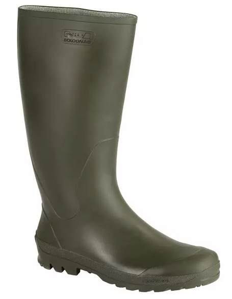
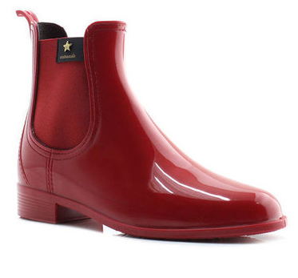
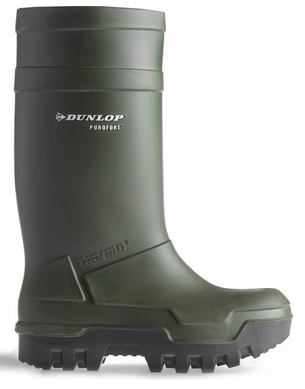
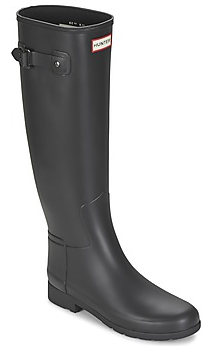

Tipos
Galochas como ferramenta de trabalho
A principal utilidade no uso de galochas é efetivamente como instrumento de trabalho, com o objetivo de proteger os pés das adversidades ambientais.

Exemplo de galocha de trabalho
Galochas como acessório de moda
Podem ainda ser usadas como um acessório de moda, principalmente devido à indústria de calçado feminino.

Exemplo de galocha de moda
Marcas
Dunlop
A Dunlop, é uma marca multi-facetada, que entre muitos produtos, produzem galochas de trabalho com elevada qualidade.

Exemplo de galocha da marca Dunlop
Hunter
A maior marca a nivel mundial, e que veio tomar de arromba o mercado de galochas femininas, foi a marca Hunter.

Exemplo de galocha da marca Hunter